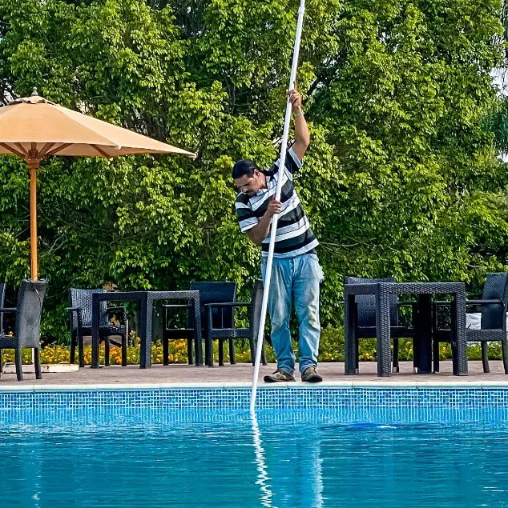
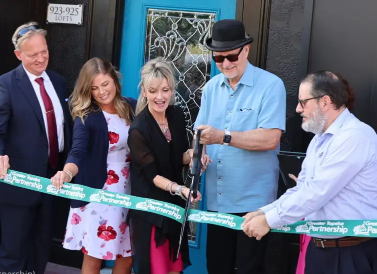
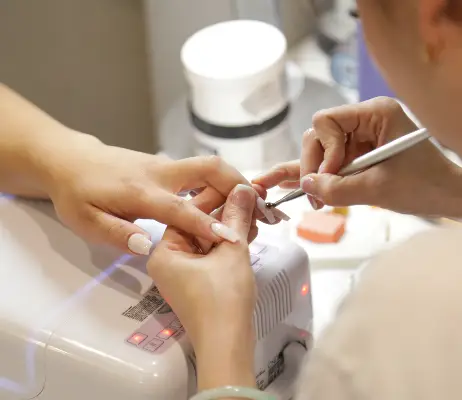
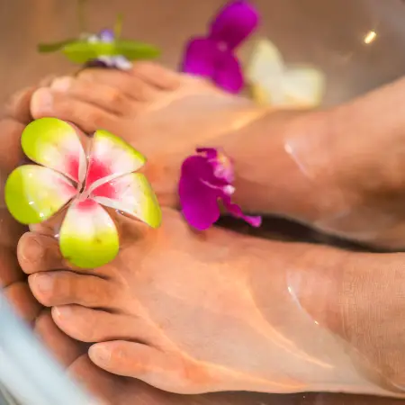

Welcome! We're Glad You're Here!
upcoming events placeholder

Pete's & Patti's Pool Service and Construction
Pete's & Patti's Pool Service has been constructing and servicing pools in the Topeka area for more 15 years.
The staff has over 50 years of combined experience in their field. They can install or construct any type of
pool whether above or below ground. They can even build that beautiful deck and outdoor area to make your
backyard an oasis paradise.
Pete and Patti are happy to announce the grand opening of their new office and store. The business will be
expanding their services to include all types of residential construction. The Topeka Chamber of Commerce
invites all attend the ribbon cutting to the grand opening of their new office and store. The ribbon cutting
will take place on December 18th at 11 a.m. Come see what services Pete's and Patti's Pool Service and
Construction offer the Topeka area. There will be free popcorn for the kids! For more information or a bid on your next pool, call Pete and Patti at (785) 296-1234.

Join Us For The Benefits!
Why should I join the Topeka Chamber of Commerce? This question is the question we are asked the most. We love
to answer it! Here is a list of few reasons why YOU and YOUR BUSINESS should join!
- Join the strongest business network in the area! We are 1000 businesses and 1700 individuals strong!
- Join for the business friendly atmosphere and support! We have both formal and informal meetings to share
ideas and unify as a community!
- Join for the Member to Member Benefits! All members and their employees can enjoy benefits by shopping at
chamber member's businesses.
- Join for the chamber sponsored business promotional events! The chamber will assist with business
promotional events such as ribboncuttings.
Join Us!


✂ Sally's Salon ✂
Sally's Salon recently opened and had its grand opening. The salon offers many services including haircuts, hairdressing, manicures, pedicures, and other beauty salon services. Daily specials occur Monday through Thursday. Mondays are $40 wash, dry, and haircut. Tuesdays are $30 manicures and hand massage all day. Wednesdays are $30 pedicures and foot massages all day. On Thursdays, all beauty supplies are 10% off with hair styling.
Sally's Salon is located on the northeast corner of SW 6th and Jackson in downtown Topeka. You can also see our prices and specials on sallyssalon.com or social media pages. We are on Instagram, Facebook, TikTok, and Twitter. We also can be reached by phone at (785) 296-2345.
Weather Summary
Currently:
Current temp:
°F
Wind Chill:
Humidity:
Wind Speed:
MPH
Emily's Sweet Confections
Pete's & Patti's Pool Service has been constructing and servicing pools in the Topeka area for more 15 years.
The staff has over 50 years of combined experience in their field. They can install or construct any type of
pool whether above or below ground. They can even build that beautiful deck and outdoor area to make your
backyard an oasis paradise.
Pete and Patti are happy to announce the grand opening of their new office and store. The business will be
expanding their services to include all types of residential construction. The Topeka Chamber of Commerce
invites all attend the ribbon cutting to the grand opening of their new office and store. The ribbon cutting
will take place on December 18th at 11 a.m. Come see what services Pete's and Patti's Pool Service and
Construction offer the Topeka area. There will be free popcorn for the kids!
Mission and Goals
The mission of the Chamber is to build a strong network among the companies that conduct business in Topeka, promote business in our city, and attract new businesses to join our ranks. We believe Topeka is the best place to have a business because of the business friendly and family friendly atmosphere in the city. Topeka is a medium-sized city with numerous smaller towns in the surrounding area of northeast Kansas and easy access to the Kansas City metropolitan area. Our city attracts many consumers from the surrounding towns. Also, our top-notch schools and neighborhoods provide good opportunities for raising and educating families. We have a large and well-known university, Washburn University, and several smaller higher education institutions. Our current goals are as follows:
- Plan and execute six small gatherings on a bimonthly schedule throughout the year. The small gatherings will enable business leaders and representatives to gather in informal environment to discuss ideas and concerns and promote networking.
-
Plan and execute an annual conference to give the state of business in our city. A special guest will be invited to speak at the conference. The conference will be advertised in several regions to promote networking between our businesses and businesses in the other cities.
-
Plan and execute an annual business and trade show with Visit Topeka to promote businesses in our area. The show will be open to the public so the companies can educate the attendees about their products and services.
-
Plan and execute two community events with the Parks and Recreation department. One event will be a 5K which local businesses can help sponsor and collect money for the local food pantries. A second event will be a free concert held at Evergy Plaza in downtown Topeka. Both events will be family friendly to promote unity amongst our members and the community of Topeka.
-
Increase our membership by 100 businesses or individuals and maintain our current membership partners.
-
Promote our city by developing and implementing an incentive program to attract new businesses to our city. The current idea is to work with the city council to adopt a tax credit plan that will provide credits based on the number of employees in the business and the type of business.
-
Implement a business promotion program where our Executive Committee will vote on three companies to highlight for each month. The three companies will be highlighted on the home page of our website.